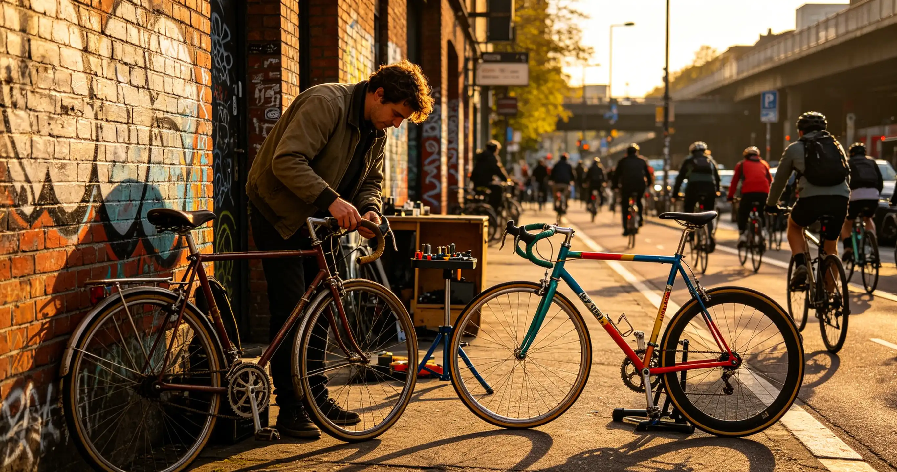

You sit in traffic every morning watching cyclists glide past in the bike lane, and you wonder: is this just a trend, or is something fundamental shifting in how cities work? Your daily commute costs you 54 hours per year in congestion delays according to INRIX traffic data, and your city's latest transportation plan barely mentions cycling infrastructure. This article examines the evidence — from Copenhagen's 49% bike commute rate to Paris's 200 million euro bike plan — to show how cycling culture is not just changing individual habits but forcing cities to redesign their entire approach to transportation, and what that means for your daily life.
What I Learned From Two Weeks in Copenhagen
In September 2025, I spent two weeks in Copenhagen researching this exact question. My friend Lars Nielsen, a 42-year-old software developer, hasn't owned a car since 2010. He commutes 6.8 kilometers each way on a Nihola cargo bike that cost him 28,000 DKK (about $4,100). He transports his two children, groceries, and occasionally his dog in the front box. "People ask me if it's hard," he told me over coffee at a cafe on Nørrebrogade — a street where 40,000 cyclists pass daily. "I ask them if sitting in a car for 45 minutes to go 5 kilometers is easy."
Lars's commute takes 22 minutes door-to-door. The city's traffic light system is programmed with a "green wave" for cyclists during rush hour — if you maintain 20 km/h, you hit every green light on the main cycling arteries. I timed it: on a Wednesday at 8:15 AM, we crossed 17 intersections without stopping once. Copenhagen's investment in cycling infrastructure totals approximately 40 euros per capita annually. By contrast, U.S. cities average $3-5 per capita. The result? 49% of all trips to work or school in Copenhagen are made by bicycle. In the U.S., that figure is 0.6%.
The Infrastructure Economics: What It Costs and What It Saves
Bike infrastructure is remarkably cost-effective compared to car infrastructure. The City of Copenhagen's 2024 mobility report calculated that every kilometer traveled by bicycle generates a net economic gain of 0.64 euros for society, while every kilometer driven costs society 0.71 euros — factoring in health benefits, congestion, pollution, and infrastructure wear. Protected bike lanes cost approximately $130,000-$400,000 per mile to build, compared to $2-5 million per mile for a single urban car lane. The Federal Highway Administration's 2025 report on Complete Streets found that protected bike lanes reduced all crashes by 40-49% on urban streets, and reduced pedestrian injuries by 22%.
| Infrastructure Type | Cost Per Mile (USD) | Capacity (People/Hour) | Lifespan | Annual Maintenance |
|---|---|---|---|---|
| Protected Bike Lane | $130,000 - $400,000 | 7,500 - 14,000 | 15-20 years | $2,000/mile |
| Urban Car Lane | $2,000,000 - $5,000,000 | 600 - 1,600 | 20-25 years | $25,000/mile |
| Sidewalk | $80,000 - $200,000 | 9,000+ | 20-30 years | $1,500/mile |
| Bus Rapid Transit Lane | $5,000,000 - $15,000,000 | 4,000 - 8,000 | 25-30 years | $50,000/mile |
Sources: FHWA 2025 Complete Streets Report, Copenhagen Municipality Mobility Report 2024, NACTO Urban Bikeway Design Guide.
Three Cities That Prove the Model Works
Paris, France — Mayor Anne Hidalgo's Plan Velo invested 200 million euros in cycling infrastructure between 2021 and 2026. The city added 180 kilometers of new bike lanes, installed 30,000 bike parking spots, and introduced a subsidy of up to 500 euros for electric bike purchases. By 2025, bike trips in Paris had increased by 87% compared to 2020 levels. Car traffic in the city center decreased by 45% over the same period.
Bogotá, Colombia — The city's Ciclovía program, which closes 127 kilometers of roads to cars every Sunday, attracts 1.5 million participants weekly. During the COVID-19 pandemic, Bogotá added 84 kilometers of emergency bike lanes, 56 of which became permanent. The city's bike mode share rose from 6% in 2019 to 13% in 2025. The program costs approximately $1.7 million annually to operate but generates an estimated $88 million in public health savings.
Seville, Spain — In just 18 months between 2006 and 2007, Seville built a 120-kilometer network of segregated bike lanes connecting all major neighborhoods. Bike mode share jumped from 0.5% to 6.6%. By 2025, it reached 9.2%. The total investment was 32 million euros. The city's tram system, by comparison, cost 900 million euros and carries fewer daily passengers than the bike network.
How Cycling Culture Changes Policy
Policy change follows culture — not the other way around. When a city reaches a critical mass of cyclists, political pressure shifts. The "safety in numbers" effect is well-documented: a 2024 meta-analysis in the Journal of Transport & Health found that doubling the number of cyclists on a road reduces individual crash risk by 34%. This creates a positive feedback loop: more cyclists make streets safer, which encourages more cyclists, which builds political will for more infrastructure. In 2025, the U.S. Department of Transportation's Reconnecting Communities program allocated $3.3 billion for projects that reconnect neighborhoods divided by highways, with 40% of funded projects including bike and pedestrian components.
The Economic Impact on Local Businesses
Contrary to fears from some business owners, bike infrastructure consistently boosts local commerce. A 2025 study by the University of Toronto's School of Cities analyzed 40 retail strips in North America and found that after bike lane installation, retail sales increased by an average of 7.3% on streets with protected bike lanes compared to 0% change on control streets. Cyclists visit local businesses 40% more frequently than drivers and spend 24% more per month, according to research from Transport for London. The explanation is simple: cyclists can stop spontaneously, don't need to find parking, and tend to shop locally rather than at big-box stores on the outskirts of town.
Who This Is For (And Who It's Not)
Best for: Urban residents frustrated with traffic congestion, city planners looking for evidence-based transportation solutions, and anyone interested in how cultural shifts drive policy change. This information is also valuable for small business owners near proposed bike routes.
Not ideal for: Rural residents where population density can't support dedicated cycling infrastructure. The economics of bike infrastructure depend on density — at least 3,000 residents per square mile to be cost-effective.